NONMEM Users Guide Part I - Users Basic Guide - Chapter E
E. Linear Regression with One-Level Nested Random Effects
E.1. Introduction
E.2 Example with One Inter- and One Intra-Individual Random Effect
E.3. Implementation of Example 1 E.3.1. Inputs
E.3.2 Selected Printout
E.4. Example with Two Inter- and Two Intra-individual Random Effects
E.5 Implementation of Example 2
E.5.1 Inputs
E.5.2 Selected Printout
NONMEM Users Guide Part I - Users Basic Guide - Chapter E
E. Linear Regression with One-Level Nested Random Effects
E.1. Introduction
In this chapter two examples,
using some new type of data, are considered. The data are
typical of repeated measures type data and can be modeled
using one-level nested random effects. Also, the data can be
modeled using a linear, rather than a nonlinear, regression
function. This simplification allows the reader to better
focus on the considerations involving the random effects.
However, use of a linear regression function is also very
common with repeated measures type data. (An example
involving a nonlinear regression function is given in
chapter F.) One example involves one random interindividual
effect and one random intraindividual effect. It is
discussed in sections E.2 and E.3. Another example, a
multivariate regression and with two random effects of each
type, is discussed in sections E.4 and E.5.
E.2 Example with One Inter- and One Intra-Individual Random Effect
In this example six oral doses
of theophylline were administered to each of a number of
subjects. With each subject the doses were given at times
when no drug from previous doses remained in the subject.
For each dose, a measurement called the (observed) drug
clearance for the subject, was made using the measured drug
concentration vs time data resulting from the dose after
absorption was complete. Drug clearance has the form: dose
divided by area under the concentration vs time curve. It is
a measurement of the elimination chracteristics of the drug
(The clearance might be given by the formula
, where
and
are estimates of the rate constant of elimination and volume
of distribution, obtained from the concentration vs time
data as in previous examples. However, in this example the
clearance was computed nonparametrically.) The observations
are these clearances. The subject’s weight is often an
important explanatory variable of his clearance, and weight
data items are included in the data set. The pharmacokinetic
model for theophylline plasma concentration is linear in
dose (see the previous examples), and therefore clearance is
assumed to be independent of dose.
The statistical model for the
jth observation from the ith individual is taken to be
where
 and
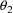
are regression parameters,
denotes weight, the
and
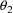
are regression parameters,
denotes weight, the
 are statistically independent values of random
interindividual effects, with means 0 and common variance
are statistically independent values of random
interindividual effects, with means 0 and common variance
 (a scalar), and the
are statistically independent values of random
intraindividual effects, with means 0 and common variance
(a scalar), and the
are statistically independent values of random
intraindividual effects, with means 0 and common variance
 (a scalar). A value of the random interindividual effect,
(a scalar). A value of the random interindividual effect,
 , is always taken to be statistically independent of a value
of the random intraindividual effect,
, is always taken to be statistically independent of a value
of the random intraindividual effect,
 . The variable x is doubly subscripted, suggesting that for
each individual, its value can vary between doses. In fact,
though, in the actual data set its value remains constant
across doses for each individual. The regression function is
linear in weight. Since if this linearity holds, it may do
so only over a limited weight range, an intercept parameter
might be included in the model. However, analysis of the
data has revealed no evidence whatsoever of a nonzero
intercept. Consequently, while an intercept parameter has in
fact been included in the model, in this example it shall be
constrained to be 0. Under the model, the observations
,
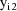
, ...,
are each affected by
. The variable x is doubly subscripted, suggesting that for
each individual, its value can vary between doses. In fact,
though, in the actual data set its value remains constant
across doses for each individual. The regression function is
linear in weight. Since if this linearity holds, it may do
so only over a limited weight range, an intercept parameter
might be included in the model. However, analysis of the
data has revealed no evidence whatsoever of a nonzero
intercept. Consequently, while an intercept parameter has in
fact been included in the model, in this example it shall be
constrained to be 0. Under the model, the observations
,
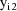
, ...,
are each affected by
 , and so they are correlated. We let
, and so they are correlated. We let
 denote the column form of the vector consisting of the six
observations,
. The random intraindividual effect is clearly nested within
the random interindividual effect. For each value of the
random interindividual effect, the random intraindividual
effect takes on six different values, while for no value of
the random intraindividual effect does the random
interindividual effect take on different values. (These
effects are presumed to be continuously distributed.)
denote the column form of the vector consisting of the six
observations,
. The random intraindividual effect is clearly nested within
the random interindividual effect. For each value of the
random interindividual effect, the random intraindividual
effect takes on six different values, while for no value of
the random intraindividual effect does the random
interindividual effect take on different values. (These
effects are presumed to be continuously distributed.)
The NONMEM linear model
schematic is given by
where

Let I denote the number of
individuals. Also, for fixed i, let
 denote the column vector of values of the
, let
denote the column vector of values of the
(viz. a column vector of 1’s), and let
denote the column vector of values of the
denote the column vector of values of the
, let
denote the column vector of values of the
(viz. a column vector of 1’s), and let
denote the column vector of values of the
 (viz. a column vector of 1’s). Then the ELS objective
function is given by
(viz. a column vector of 1’s). Then the ELS objective
function is given by

where
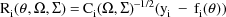
and where if A is a square
matrix,
 denotes the diagonal matrix whose diagonal elements are
those of A. The matrix
denotes the diagonal matrix whose diagonal elements are
those of A. The matrix
 is the variance-covariance matrix of
is the variance-covariance matrix of
 . The vector
is the vector of weighted residuals from the observations
. The vector
is the vector of weighted residuals from the observations
 . As with previous examples, it has the form residual
(vector) divided by standard deviation (matrix), and it is
"squared" in the expression for the objective
function. The weighted residuals are defined to be
the weighted residuals from all obervations
. As with previous examples, it has the form residual
(vector) divided by standard deviation (matrix), and it is
"squared" in the expression for the objective
function. The weighted residuals are defined to be
the weighted residuals from all obervations
 . It may be seen that the form of the objective function is
the same as that given with previous examples, except that
now
has an extra term expressing intraindividual variability
which for the first time is a factor.
. It may be seen that the form of the objective function is
the same as that given with previous examples, except that
now
has an extra term expressing intraindividual variability
which for the first time is a factor.
E.3. Implementation of Example 1 E.3.1. Inputs
A code for PRED which implements
the example is given in Fig. 57. Note that the values
and
are returned in G(1) and H(1), respectively. These are the
coefficients of
 and
in the NONMEM linear model schematic. In general, the value
returned in G(I) is the coefficient of the Ith random
interindividual effect in the NONMEM linear model schematic,
and the value returned returned in H(I) is the coefficient
of the Ith random intraindividual effect in the NONMEM
linear model schematic.
and
in the NONMEM linear model schematic. In general, the value
returned in G(I) is the coefficient of the Ith random
interindividual effect in the NONMEM linear model schematic,
and the value returned returned in H(I) is the coefficient
of the Ith random intraindividual effect in the NONMEM
linear model schematic.
A control stream for this
example is given in Fig. 58. The data set is embedded in it,
and the data items in a data record are the ID, weight, and
DV data items, respectively.
Since in the example there are
both random inter- and intra-individual effects, there are
entries in both fields 2 and 3 of the initial STRUCTURE
record. In general, the numbers of random interindividual
effects and random intraindividual effects are placed in
fields 2 and 3, respectively. The total number of both
random inter- and intra-individual effects cannot exceed 10.
Also, since in the example both
 and
and
 are taken to be diagonal (they are both scalars), there are
1’s in both fields 6 and 8. In general, if
are taken to be diagonal (they are both scalars), there are
1’s in both fields 6 and 8. In general, if
 is constrained to be diagonal, a 1 is placed in field 6, and
if
is constrained to be diagonal, a 1 is placed in field 8. If
is constrained to be diagonal, a 1 is placed in field 6, and
if
is constrained to be diagonal, a 1 is placed in field 8. If
 (
(
 ) is not constrained, a 1 is placed in field 7 (9). (Since a
scalar is also an unconstrained
matrix, in this example a 1 could be placed in either field
7 or 9, but a more perspicuous problem summary develops when
a scalar is regarded as a diagonal matrix.)
) is not constrained, a 1 is placed in field 7 (9). (Since a
scalar is also an unconstrained
matrix, in this example a 1 could be placed in either field
7 or 9, but a more perspicuous problem summary develops when
a scalar is regarded as a diagonal matrix.)
The initial estimate of
is obtained by first averaging all the 72 clearances to
obtain an estimate of mean clearance in the population.
(This is equivalent to averaging the 6 clearances in each of
the 12 individuals to obtain to obtain estimates of the
individuals’ mean clearances, and then averaging these
12 individual estimates.) Then this estimate is divided by
70Kg, the average weight of the individuals of the sample,
to obtain the desired estimate. Since lower and upper bounds
of 0 are specified for
(thus this parameter is fixed to 0), lower and upper bounds
must also be specified for
, but these are taken to be
and
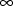
(see sections C.3.4.4 and C.3.4.5).
Since in the example the two
parameters
 and
must be estimated, as well as
and
must be estimated, as well as
 , there must be initial estimates specified for each.
Therefore, a DIAGONAL record for
, as well as a DIAGONAL record for
, there must be initial estimates specified for each.
Therefore, a DIAGONAL record for
, as well as a DIAGONAL record for
 appears in the problem specification. Its form is exactly
that of the DIAGONAL record for
appears in the problem specification. Its form is exactly
that of the DIAGONAL record for
 . The initial estimate record for
(be it a DIAGONAL or BLOCK SET record) is placed after the
initial estimate record for
. The initial estimate record for
(be it a DIAGONAL or BLOCK SET record) is placed after the
initial estimate record for
 (be it a DIAGONAL or BLOCK SET record).
(be it a DIAGONAL or BLOCK SET record).
Unlike previous examples, for
illustrative purposes, actual initial estimates have been
placed in both DIAGONAL records, rather than letting the
fields be blank. The initial estimate of
 is obtained by first obtaining for each individual, the
sample variance of his clearance measurements. Then these
individual estimates are averaged to obtain the desired
estimate. The initial estimate of
is obtained by first obtaining for each individual, the
sample variance of his clearance measurements. Then these
individual estimates are averaged to obtain the desired
estimate. The initial estimate of
 is obtained by first calculating the sample variance of the
individuals’ average clearances. Then 1/6 of the the
initial estimate of
is subtracted from this sample variance to obtain the
desired estimate. In this example the same final estimate,
standard errors, etc. are obtained when the fields of the
DIAGONAL records are left blank.
is obtained by first calculating the sample variance of the
individuals’ average clearances. Then 1/6 of the the
initial estimate of
is subtracted from this sample variance to obtain the
desired estimate. In this example the same final estimate,
standard errors, etc. are obtained when the fields of the
DIAGONAL records are left blank.
E.3.2 Selected Printout
The final parameter estimate,
standard errors, and correlation matrix are shown in Figs.
59-61. Note that in these printouts
is listed. Its final estimate is 0, the value to which the
parameter is fixed. The covariance (or correlation) of any
estimate of a fixed parameter with the estimate of any other
parameter is by definition 0. However, lest the user forget
this and think that a number other than 0 could appear for
the estimate of this covariance (or correlation), but that 0
is in fact the estimate, a 0 does not in fact appear in the
printout. Instead, a place holder consisting of dots appears
in order to remind the user that the covariance
(correlation) is 0 by definition. Similarly, this type of
place holder also appears for the standard error estimate of
the point estimate of a fixed parameter.
The two scatterplots of residual
vs weight and weighted residual vs weight are shown in Figs.
62 and 63. It is not necessary to separate these
scatterplots by ID since in this example weight is in effect
a surrogate for ID, and so the residuals are already very
naturally separated by individual. However, to better look
for homogeneous scatter, it is better to examine the
scatterplot of weighted residual vs weight. In this example
the weighted residuals are distributed much more
homogeneously about the zero line than are the
residuals.
E.4. Example with Two Inter- and Two Intra-individual Random Effects
This is an extension of example
1. Again, six oral doses are given to each of 12 subjects,
and with each dose a clearance is measured. In addition,
with each dose a rate constant of elimination is measured.
This measurement is an estimate of the parameter
in the example of section D.4, obtained graphically from the
plasma concentration vs time data ocurring after the
absorption phase is over. The clearance and rate constant
may correlate across doses within any individual. Therefore,
the clearance and rate constant together form a bivariate
observation from the point of view of random intraindividual
variablity. There are altogether 6 such bivariate
observations per individual.
The statistical model for the
kth element of the jth (bivariate) observation from the ith
individual is taken to be

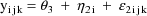
where
is a clearance-rate constant indicator variable (0:
clearance; 1: rate constant). Here the new part of the model
is the part for the rate constant measurement. The mean rate
constant measurement is simply assumed to be a constant and
not to vary with weight. The error structure for the rate
constant measurements is analogous to that for the clearance
mesurements; it is the sum of both simple interindividual
and simple intraindividual error. The variance-covariance
matrix of
is the
matrix
 , and the variance-covariance matrix of
is the
matrix
, and the variance-covariance matrix of
is the
matrix
 . A value of the random interindividual effect vector
. A value of the random interindividual effect vector
 is always statistically independent of a value of the random
intraindividual effect vector
is always statistically independent of a value of the random
intraindividual effect vector
 . Under the model the clearance observations from individual
i are each affected by the
, the rate constant observations from individual i are each
affected by
, and
and
are correlated, and so all the observations from individual
i are correlated. Each pair of clearance and rate constant
observations with a given dose are also correlated by virtue
of the correlation between the two random intraindividual
effects. We let
denote the column form of the vector consisting of the
twelve observations,
. Under the model the clearance observations from individual
i are each affected by the
, the rate constant observations from individual i are each
affected by
, and
and
are correlated, and so all the observations from individual
i are correlated. Each pair of clearance and rate constant
observations with a given dose are also correlated by virtue
of the correlation between the two random intraindividual
effects. We let
denote the column form of the vector consisting of the
twelve observations,
 . The random intraindividual effects are clearly nested
within the random interindividual effects.
. The random intraindividual effects are clearly nested
within the random interindividual effects.
The NONMEM linear model
schematic is given by
where


Let I denote the number of
individuals. Also, for fixed i, let
denote the column vector of values of the
, let
denote the column vector of values of the
, let
denote the column vector of values of the
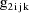
, let
denote the column vector of values of the
, and let
denote the column vector of values of the
. Then the ELS objective function is given by
where
and where if A is a square
matrix,
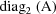
denotes the block diagonal matrix whose diagonal blocks are
the
 diagonal blocks of A. The matrix
is the variance-covariance matrix of
diagonal blocks of A. The matrix
is the variance-covariance matrix of
 . The vector
is the vector of weighted residuals from the observations
. The vector
is the vector of weighted residuals from the observations
 . As with previous examples, it has the form residual
(vector) divided by standard deviation (matrix), and it is
"squared" in the expression for the objective
function. The weighted residuals are defined to be
the weighted residuals from all obervations
. As with previous examples, it has the form residual
(vector) divided by standard deviation (matrix), and it is
"squared" in the expression for the objective
function. The weighted residuals are defined to be
the weighted residuals from all obervations
 .
.
E.5 Implementation of Example 2
E.5.1 Inputs
A code for PRED which implements
the example is given in Fig. 64. The computation involves
querying the value of
. Note that the values
and
are returned in G(1) and G(2), respectively. These are the
coefficients of
and
in the NONMEM linear model schematic. In general, the value
returned in G(I) is the coefficient of the Ith random
interindividual effect in the NONMEM linear model schematic.
The values
and
are returned in H(1) and H(2), respectively. These are the
coefficients of
and
in the NONMEM linear model schematic. In general, the value
returned in H(I) is the coefficient of the Ith random
intraindividual effect in the NONMEM linear model
schematic.
A control stream for this
example is given in Fig. 65. The data set is embedded in it,
and the data items in a data record are the ID data item,
the weight data item, the DV data item, the clearance-rate
constant indicator data item (
), and the level-two data item, respectively. This last type
of data item is needed with one-level nested random effects
in order to group together the DV data items belonging to a
bivariate observation (see section B.1). It is given the
label L2 in the NONMEM printout, and the ID data item is
given the label L1 since in this example the ID data item is
also the level-one data item. Note that for readability and
for the purpose of conveniently keying the data, the
indicator data item is blank in those places where it is
actually zero, and similarly with the level-two data item.
The alternating use of the values 0 and 1 for the level-two
data items illustrates how it is not necessary that
noncontiguous level-two records have different level-two
data items. Note that the index of the level-two data item
is placed in field 7 of the ITEM record.
The initial STRUCTURE record for
the problem specification has 1’s in fields 7 and 9,
indicating that both
 and
and
 are full matrices, i.e. neither is constrained to be
diagonal. When a 1 is placed in field 7 (9) of the initial
STRUCTURE record, the number of random inter- (intra-)
individual effects cannot exceed 5.
are full matrices, i.e. neither is constrained to be
diagonal. When a 1 is placed in field 7 (9) of the initial
STRUCTURE record, the number of random inter- (intra-)
individual effects cannot exceed 5.
The control stream contains a
STRUCTURE record for
 , as well as a STRUCTURE record for
, as well as a STRUCTURE record for
 . This is, of course, because neither
. This is, of course, because neither
 nor
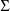
is constrained to be a diagonal matrix. The form of the
STRUCTURE record for
nor
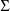
is constrained to be a diagonal matrix. The form of the
STRUCTURE record for
 is exactly that of the STRUCTURE record for
is exactly that of the STRUCTURE record for
 (see section D.5.2). When the STRUCTURE record for
(see section D.5.2). When the STRUCTURE record for
 appears, it is placed after the STRUCTURE record for
appears, it is placed after the STRUCTURE record for
 , except when the latter record is not present, in which
case the STRUCTURE record for
, except when the latter record is not present, in which
case the STRUCTURE record for
 is placed after the initial STRUCTURE record.
is placed after the initial STRUCTURE record.
The initial estimate for
 is that used in the previous example. The initial estimate
of
is obtained by averaging the 72 rate constant
measurements.
is that used in the previous example. The initial estimate
of
is obtained by averaging the 72 rate constant
measurements.
The control stream contains a
BLOCK SET record for
 , as well as a BLOCK SET record for
, as well as a BLOCK SET record for
 . The form of the BLOCK SET record for
. The form of the BLOCK SET record for
 is exactly that of the BLOCK SET record for
is exactly that of the BLOCK SET record for
 (see section D.5.3).
(see section D.5.3).
The initial estimate of
 is obtained by first obtaining for each individual, the
sample variance-covariance matrix of his clearance and rate
constant measurements. Then these individual matrix
estimates are averaged to obtain the desired estimate. The
initial estimate of
is obtained by first obtaining for each individual, the
sample variance-covariance matrix of his clearance and rate
constant measurements. Then these individual matrix
estimates are averaged to obtain the desired estimate. The
initial estimate of
 is obtained by first calculating the sample
variance-covariance matrix of the individuals’ average
clearances and average rate constants. Then 1/6 of the the
initial estimate of
is obtained by first calculating the sample
variance-covariance matrix of the individuals’ average
clearances and average rate constants. Then 1/6 of the the
initial estimate of
 is subtracted from this sample variance-covariance matrix to
obtain the desired estimate. In this example the same final
estimate, standard errors, etc. are obtained when the fields
of the BLOCK SET records are left blank.
is subtracted from this sample variance-covariance matrix to
obtain the desired estimate. In this example the same final
estimate, standard errors, etc. are obtained when the fields
of the BLOCK SET records are left blank.
E.5.2 Selected Printout
The final estimate, standard
errors, and correlation matrix are shown in Figs. 66-68. It
is interesting to compare the final estimates and standard
errors from this example with those from the previous
example. All the parameters associated with clearance only
that occur in the model with the previous example also occur
in the extension of that model which is considered here, and
in this extended model the only parameter associated with
both clearance and rate constant is the covariance parameter
in
 . Consequently, the final estimates and standard errors of
the estimates from this example are very close to those from
the previous example.
. Consequently, the final estimates and standard errors of
the estimates from this example are very close to those from
the previous example.
Regarding the covariance
parameter
, note that its normalized value, i.e. the correlation
between
and
(
), is estimated to be .95. (Whereas the minimum value of the
objective function is -651, in another NONMEM run where
 is constrained to be DIAGONAL the minimum value is much
larger -631, indicating that the correlation is indeed
significant.) This suggests that variablity in estimates of
volume of distribution that might be obtained across
individuals and doses would be due largely to random
intraindividual (dose to dose) variablity and little to
random interindividual variablity. The reason for this is as
follows. As noted in section E.2, a clearance observation
for a given individual and dose might have been measured by
is constrained to be DIAGONAL the minimum value is much
larger -631, indicating that the correlation is indeed
significant.) This suggests that variablity in estimates of
volume of distribution that might be obtained across
individuals and doses would be due largely to random
intraindividual (dose to dose) variablity and little to
random interindividual variablity. The reason for this is as
follows. As noted in section E.2, a clearance observation
for a given individual and dose might have been measured by
 , where
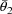
and
are estimates of the rate constant of elimination and volume
of distribution obtained from concentration vs time data. As
noted in section E.4, a rate constant observation for a
given individual and dose might have been measured by
. The high interindividual correlation between these two
types of measurements implies an approximately proportional
interindividual relationship between
and
, i.e. an approximately constant interindividual
relationship for
.
, where
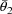
and
are estimates of the rate constant of elimination and volume
of distribution obtained from concentration vs time data. As
noted in section E.4, a rate constant observation for a
given individual and dose might have been measured by
. The high interindividual correlation between these two
types of measurements implies an approximately proportional
interindividual relationship between
and
, i.e. an approximately constant interindividual
relationship for
.
The first and last pages of the
requested table are shown in Fig. 69. The scatterplots of
residual vs weight separated by TYPE are given Figs. 70 and
71. The scatterplots of weighted residual vs weight
separated by TYPE are given in Figs. 72 and 73.
TOP
TABLE OF CONTENTS
NEXT